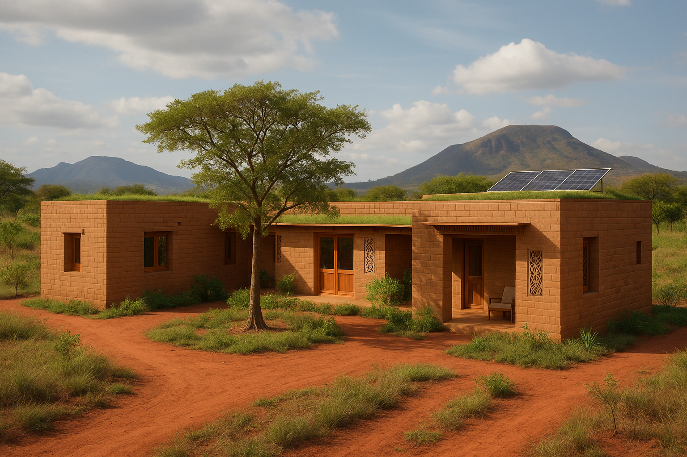
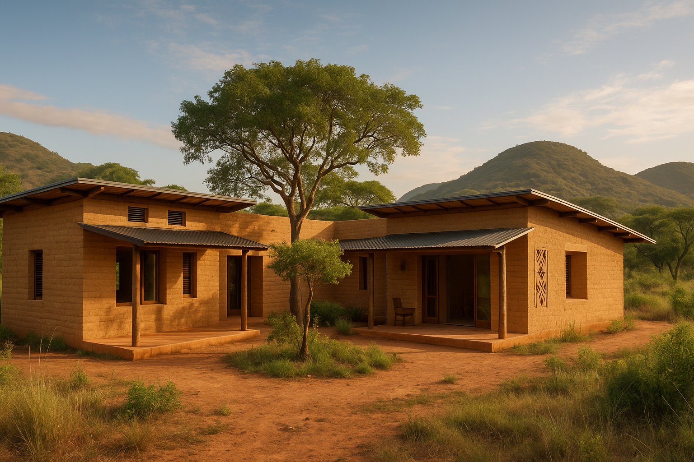

Une villa écologique moderne enracinée dans les traditions du Bénin
Casa Roots Akaradè est une maison de 100 m² conçue pour le climat rural du nord du Bénin. Elle utilise des matériaux locaux durables comme les briques de terre comprimée (BTC) et fonctionne en autonomie énergétique grâce à des panneaux solaires.
 Montant total estimé : 15 500 000 FCFA
Chancelle Nicole Hélène SOSSOUHOUNTO & Seydou Bébert Rodrigue EYEGHE EKOMIE
Tél : +32465428799 / +32465605900 (WhatsApp)
Email : akaradeakara2020@gmail.com